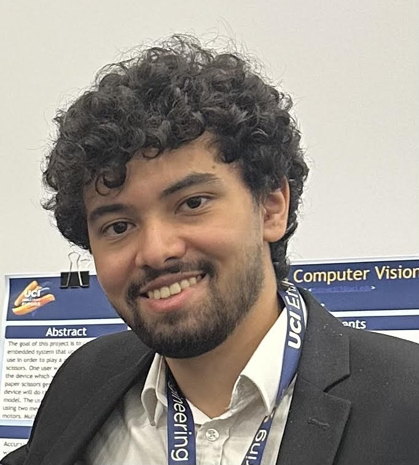

ABOUT
Hello! I am Husain Wafaie, a Software Engineer @ Google. I graduated from the University of California, Irvine in the summer of 2024, majoring in Computer Science and Engineering. I am fascinated by full-stack development, systems and infrastructure engineering, & product development. Solving complex and meaningful problems has always been a passion of mine, and I'm fortunate to have the opportunity to engage with them every day.
As a techie and a software engineer, I've worked on various projects involving drones, rockets, full-stack platforms, and much more complex systems. Most recently, I have been building software systems for UCI CanSat as the software/controls lead. After a year of hard work and countless challenges, my team and I were able to secure 4th place out of 140 teams in the International CanSat competition hosted by AAS, NASA, and Siemens. I've also had the opportunity to work on multiple software projects, primarily focusing on web development and systems engineering. I also believe in giving back to the community, which is what pushed me to become an Undergraduate Teaching Assistant at the UC Irvine Donald Bren School of Information and Computer Sciences. Lastly, I'm an international archery athlete and the UCI Archery Club President!
When I'm not on my computer, I'm usually playing archery or soccer, hanging out with friends and family, or trying out new food spots! Traveling to different countries is also one of my favorite activities. If you're ever in Belgium (and not looking to count your calories), I'd highly recommend visiting this waffle place!